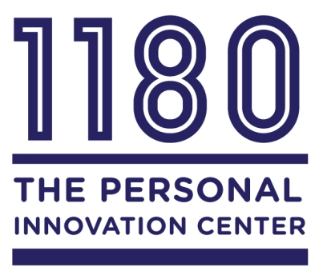

Meed Digital Tech Studio (MDTS)
About MDTS
MEED Digital Tech Studio is equipped with the latest in Apple technology and software that has integrated universal access features. Here in the studio videos and alternative format materials that are accessible are developed by students who are getting training, service, and work experience as they transition to employment. Visitors from as far as Chicago have heard about us and visited the Center to get a sense of our vision and innovation in making the postsecondary education experience fully accessible.
The MEED Digital Tech Studio (MDTS)

The iMac is only one of many sophisticated devices and other technologies that are available in the MEED Digital Tech Studio. The Studio provides training and internships for students who learn how to use iMac, iPad, iPod, and other devices that have built-in universal access features. The Studio produces videos, slide presentations, brochures, flyers, and posters through use of the latest programs in digital technology. These advanced tools better prepare our students for challenging employment opportunities.
The Personal Innovation Center
This new division was created to house the various different programs at room 1180. It is now your one stop shop for advancing your academic, and professional skills.
The Personal Innovation Center is created for students to stop by room 1180 and create their own personal creative artwork, melodies, website, slideshow, and more as well as receive assistance whenever possible.
Student Highlight: Rayko Redwolf
My name is Rayko Batista, I go by the alias Rayko Redwolf when I am on stage. I am a singer/songwriter, student, philosopher and entrepreneur. I am part of the ACCESS department because I suffered a traumatic brain injury the summer of 2005. Since then I have become a new person aspiring more than ever to fulfill my dream of being a successful artist writing meaningful songs, and sharing them with whatever community I can inspire. I am currently in the midst of production. I am working on an album along with a press package with videos, photos, and a bio of myself. The video that I have attached to this email is of me performing an acoustic version of a song that I have written entitled “Summer Air” I thank you for your interest and I hope that you enjoy.
Contact Rayko at: Raykoredwolf@gmail.com
Do you have an interesting talent, skill, or accomplishment? Want us to highlight you on our next personal innovation newsletter? Just come by and give us some information about yourself so we can find out how best to display your amazing talents!